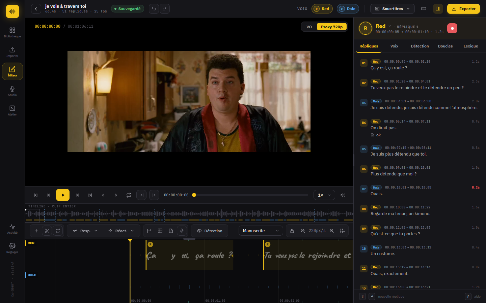
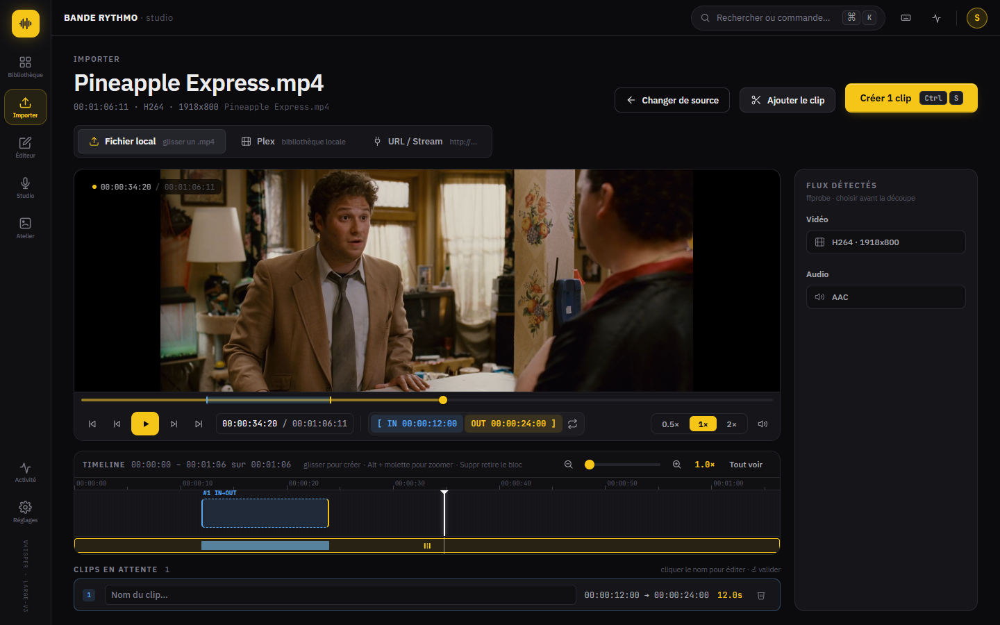

Découpez vos rushes, transcrivez avec Whisper et calez la bande rythmo image par image. Vos vidéos et vos voix restent sur votre machine.

Quatre écrans, dans l'ordre où vous travaillez. Chaque étape reprend là où la précédente s'arrête.

Transcription par clip, langue choisie au cas par cas. Aucun fichier n'est envoyé.
Couleur par personnage, texte étiré sur la durée : la convention de la bande rythmo, en natif.
Souffles, pauses et signes de détection posés sur la lettre. Tout reste éditable et s'exporte.
Décompte, élan avant la réplique, prises par rôle et comparaison A/B. La progression du rôle reste visible.
Espace lecture, I O pour la plage, R pour enregistrer, ? pour tout voir.
Un extrait, un texte, un GIF ou un MP3 pour le soundboard, sans quitter l'application.
L'atelier s'ouvre sur votre dernier projet. Les clips, les répliques et les prises sont là où vous les avez laissés.